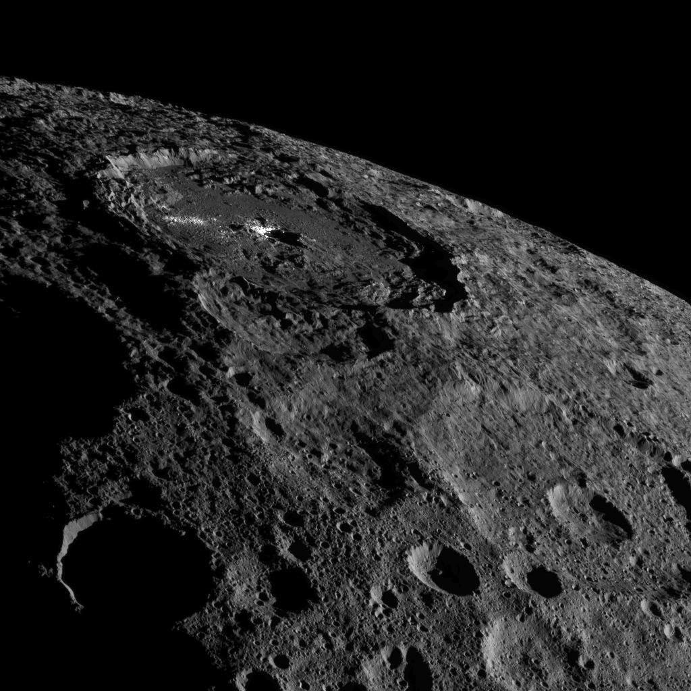
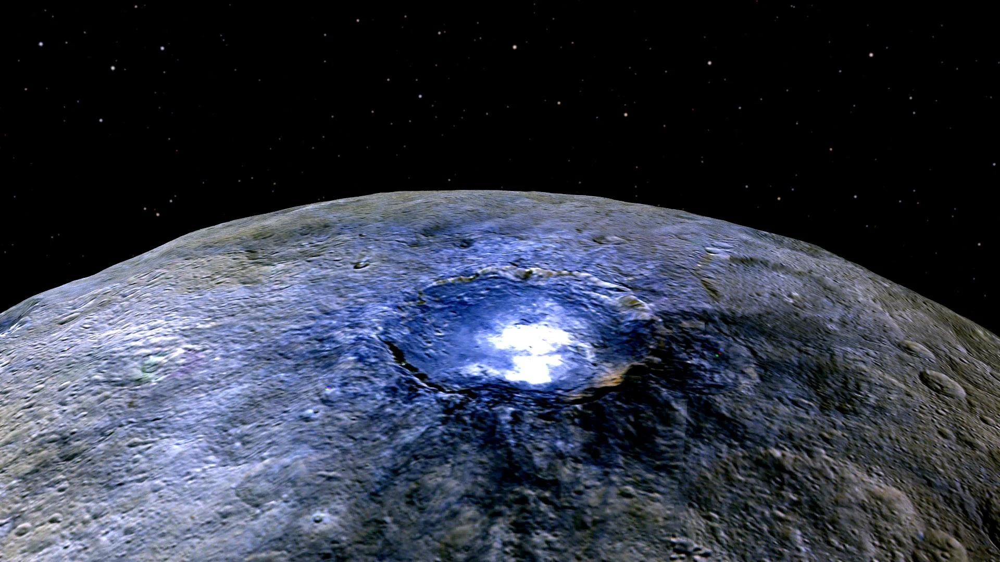
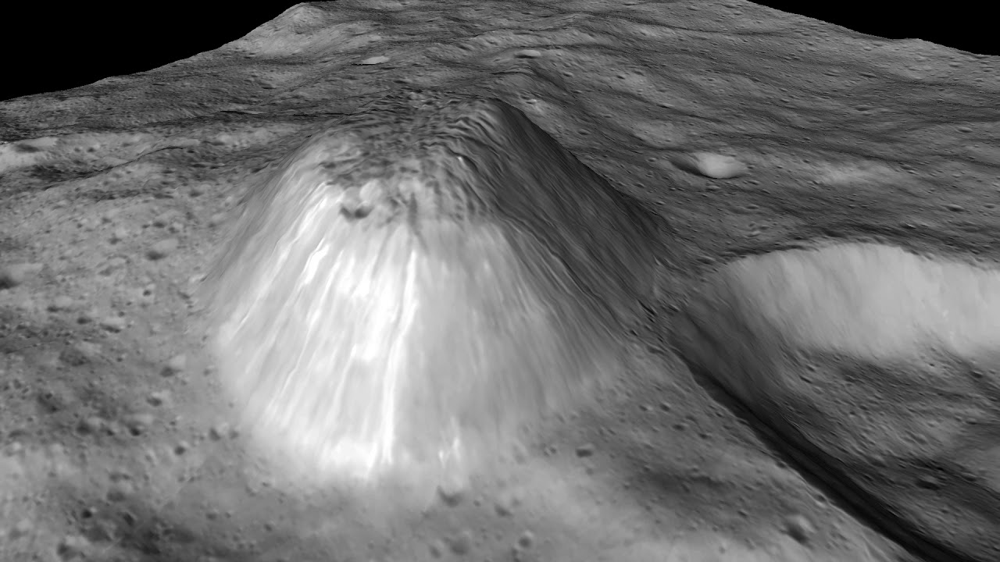

• Type : Planète naine / Astéroïde
• Diamètre : 940 km (le plus grand objet de la ceinture d'astéroïdes)
• Distance du Soleil : 414 millions de km en moyenne (2,77 unités astronomiques)
• Durée d'un jour : 9 heures et 4 minutes
• Durée d'une année : 4,6 années terrestres
• Nombre de satellites : Aucun
• Température : -105°C (moyenne de surface)
• Composition : Roche, glace d'eau, minéraux hydratés
Cérès a été découverte le 1er janvier 1801 par l'astronome italien Giuseppe Piazzi. Elle fut initialement classée comme planète, puis comme astéroïde (le premier jamais découvert), et enfin reclassée comme planète naine en 2006, en même temps que Pluton. Son nom vient de la déesse romaine de l'agriculture, des moissons et de la fertilité.
Située dans la ceinture principale d'astéroïdes entre Mars et Jupiter, Cérès représente environ un tiers de la masse totale de cette ceinture. Malgré sa petite taille, elle est suffisamment massive pour avoir atteint l'équilibre hydrostatique, c'est-à-dire qu'elle a une forme presque sphérique sous l'effet de sa propre gravité, ce qui est l'une des caractéristiques définissant une planète naine.
Les données recueillies par la mission Dawn de la NASA, qui a orbité autour de Cérès de 2015 à 2018, suggèrent que Cérès possède une structure interne différenciée, avec un noyau rocheux entouré d'un manteau riche en glace d'eau. Sa croûte est composée d'un mélange de roches, de glace et de minéraux hydratés.
L'une des découvertes les plus intrigantes de Dawn est la présence de zones brillantes à la surface de Cérès, notamment dans le cratère Occator. Ces taches lumineuses se sont révélées être des dépôts de sels, principalement du carbonate de sodium, formés lorsque de l'eau salée souterraine s'est évaporée après avoir atteint la surface suite à des impacts.
Cérès possède également une fine atmosphère temporaire, ou exosphère, composée principalement de vapeur d'eau. Cette vapeur d'eau pourrait provenir de la sublimation de glace près de la surface ou de l'activité cryovolcanique.
Bien que Cérès soit trop petite et trop froide pour abriter une vie complexe telle que nous la connaissons, elle présente plusieurs caractéristiques intéressantes du point de vue astrobiologique. La présence d'eau liquide sous sa surface, de composés organiques et de minéraux hydratés suggère qu'elle pourrait avoir connu des conditions favorables à la chimie prébiotique.
De plus, des études récentes suggèrent que Cérès pourrait abriter un océan souterrain d'eau salée, ce qui en ferait l'un des nombreux "mondes océaniques" du système solaire, aux côtés de lunes comme Europe (Jupiter) et Encelade (Saturne).
Cérès est restée un point lumineux flou dans les télescopes jusqu'à ce que la sonde Dawn de la NASA l'atteigne en 2015, devenant le premier engin spatial à orbiter autour de deux corps extraterrestres (après avoir visité l'astéroïde Vesta).
La mission Dawn a révolutionné notre compréhension de Cérès en fournissant des images détaillées de sa surface et des données sur sa composition. Elle a cartographié la planète naine en détail, révélant une surface cratérisée avec des montagnes isolées, dont Ahuna Mons, une montagne cryovolcanique de 4 km de hauteur.
La mission s'est terminée en novembre 2018 lorsque Dawn a épuisé son carburant, mais l'engin spatial reste en orbite stable autour de Cérès et le fera pendant au moins plusieurs décennies, peut-être même des siècles.
Cérès occupe une position unique dans notre compréhension de la formation du système solaire. Elle représente une classe d'objets intermédiaires entre les planètes rocheuses intérieures et les mondes glacés plus éloignés. Son étude nous aide à comprendre comment les planétésimaux (les blocs de construction des planètes) se sont formés et ont évolué dans les premières phases du système solaire.
De plus, en tant que corps riche en eau et en minéraux, Cérès est parfois considérée comme une cible potentielle pour l'exploitation minière spatiale future ou comme une source de ressources pour l'exploration humaine du système solaire.

Image haute résolution de la surface de Cérès prise par la sonde Dawn, montrant ses nombreux cratères

Le cratère Occator et ses mystérieuses taches brillantes, composées de sels minéraux

Ahuna Mons, une montagne isolée de 4 km de hauteur, probablement formée par cryovolcanisme
Chez Cosmos Explorer, nous proposons plusieurs façons de découvrir et d'explorer la fascinante planète naine Cérès :
• Exposition "Petits mondes, grandes découvertes" : Notre exposition permanente présente les images spectaculaires et les découvertes de la mission Dawn, avec un modèle détaillé de Cérès et des explications sur sa place unique dans le système solaire.
• Exploration virtuelle : Notre simulateur de réalité virtuelle vous permet de "survoler" la surface de Cérès et d'explorer ses cratères, ses taches brillantes et sa mystérieuse montagne Ahuna Mons.
• Conférences "Au-delà des planètes" : Assistez à nos présentations sur Cérès et les autres petits corps du système solaire, et découvrez comment ils nous aident à comprendre la formation et l'évolution de notre système planétaire.
• Atelier "La ceinture d'astéroïdes" : Une activité éducative où vous pouvez apprendre la différence entre astéroïdes, planètes naines et comètes, et comprendre l'importance de Cérès dans cette région du système solaire.
Pour plus d'informations sur nos programmes d'exploration de Cérès, consultez notre page d'exploration ou contactez-nous.